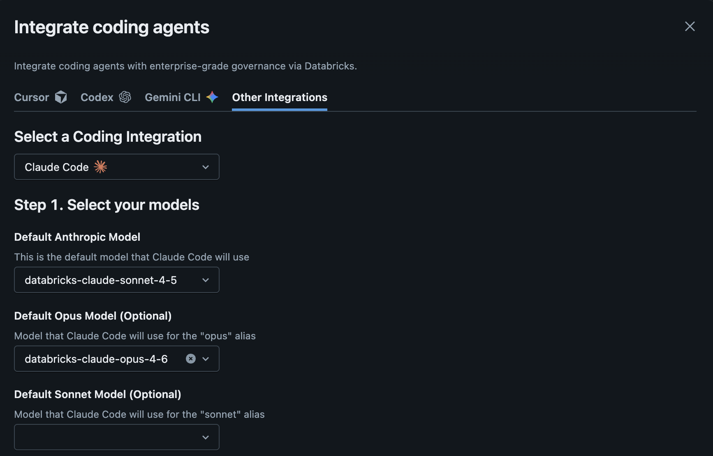

Claude Code 사용법
Section 02 · Lecture + Hands-on · 25분
CLAUDE.md를 활용한 프로젝트 컨텍스트 관리법을 이해한다# Node.js 18+ 필요
node --version
# v20.x.x 이상 권장# npm으로 전역 설치
npm install -g @anthropic-ai/claude-code# 최초 실행 시 브라우저에서 Anthropic 계정 인증
claudeclaude --version으로 정상 설치 확인
Databricks Workspace에서 Coding Agent Integration 설정
~/.claude/settings.json에 Databricks endpoint 정보를 입력합니다.
프로젝트 루트의 .claude/ 디렉토리에 설정 파일을 생성합니다.
# 프로젝트 루트에서 실행
mkdir -p .claude && pbpaste > .claude/settings.local.json
# 설정 확인
cat .claude/settings.local.json{
"env": {
"ANTHROPIC_MODEL": "databricks-claude-sonnet-4-5",
"ANTHROPIC_BASE_URL": "https://e2-demo-field-eng.cloud.databricks.com/serving-endpoints/anthropic",
"ANTHROPIC_AUTH_TOKEN": "your-databricks-token",
"ANTHROPIC_DEFAULT_OPUS_MODEL": "databricks-claude-opus-4-6",
"ANTHROPIC_CUSTOM_HEADERS": "x-databricks-use-coding-agent-mode: true",
"CLAUDE_CODE_DISABLE_EXPERIMENTAL_BETAS": "1"
}
}settings.local.json은 개인 설정 파일이므로 .gitignore에 추가하세요.
# 프로젝트 디렉토리에서 실행
claude
# Claude Code가 시작되면 자연어로 대화
> "이 프로젝트의 구조를 설명해줘"
> "tests/ 폴더에 유닛 테스트 만들어줘"
> "README.md 업데이트해줘"# -p 플래그로 한 번에 실행
claude -p "setup.py의 버전을 1.2.0으로 변경해줘"
# 파이프와 함께 사용
cat error.log | claude -p "이 에러의 원인을 분석해줘"코드 생성
> "FastAPI로 사용자 CRUD API 만들어줘"
> "pandas로 CSV 파일 읽어서
월별 매출 차트 그려주는 함수 만들어줘"리팩토링
> "이 함수를 async로 변환해줘"
> "중복 코드를 공통 유틸리티로
추출해줘"
> "타입 힌트 추가해줘"# 파일 읽기 - 프로젝트 전체를 자동으로 탐색
> "src/main.py 파일의 내용을 설명해줘"
# 파일 생성
> "config/settings.yaml 파일 만들어줘"
# 파일 편집 - 정확한 위치에 변경 적용
> "app.py의 23번째 줄에 있는 버그 수정해줘"
# 다중 파일 편집
> "모든 테스트 파일에서 deprecated된 assert 메서드를 새로운 방식으로 바꿔줘"--allowedTools로 권한을 세밀하게 제어할 수 있습니다.
# 테스트 실행
> "pytest 돌려보고 실패한 테스트 수정해줘"
# 패키지 설치
> "이 프로젝트에 필요한 패키지 설치해줘"
# Git 작업
> "변경사항 커밋하고 PR 만들어줘"! (Bash Mode)# 프롬프트에서 !로 시작하면 셸 명령 즉시 실행
> ! git status
> ! cat logs/error.log!로 셸 명령을 즉시 실행하고, 명령 출력이 대화 컨텍스트에 자동으로 추가됩니다.
# 최신 문서 참조
> "FastAPI의 최신 미들웨어 설정 방법을 검색해서 적용해줘"
# 라이브러리 사용법 확인
> "pandas 2.0의 새로운 API를 검색해서 코드에 반영해줘"
# 에러 해결
> "이 에러 메시지를 검색해서 해결 방법 찾아줘"# 스크린샷 붙여넣기 후 요청
> [스크린샷 붙여넣기]
"이 UI를 HTML/CSS로 구현해줘"
# 에러 화면 분석
> [에러 스크린샷 붙여넣기]
"이 에러의 원인을 분석해줘"
# 이미지 파일 직접 참조
> "mockup.png를 보고 동일한
레이아웃으로 만들어줘"CLAUDE.md란?
/init 명령으로 자동 생성 가능# CLAUDE.md
## 프로젝트 개요
Python 3.11 기반 FastAPI 백엔드
## 코딩 규칙
- Black 포매터 사용 (line-length=88)
- 모든 함수에 타입 힌트 필수
- docstring은 Google 스타일
## 테스트
- pytest 사용
- tests/ 디렉토리에 위치
- 커버리지 80% 이상 유지
## 주의사항
- .env 파일은 절대 커밋하지 않음
- API 키는 환경변수로 관리# 파일 경로를 직접 언급
> "src/utils/helpers.py를 보고 비슷한 패턴으로 새 유틸 함수 만들어줘"@ (파일 경로 자동완성)# @를 입력하면 파일 경로 자동완성 활성화
> @src/utils/helpers.py 이 파일을 참고해서 새 유틸 만들어줘
> @tests/ 기존 테스트 패턴을 따라서 새 테스트 작성해줘@를 입력하면 파일 경로 자동완성이 활성화됩니다. 특정 파일을 빠르게 참조할 수 있습니다.
@로 지정)
| 명령어 | 기능 | 사용 시기 |
|---|---|---|
/init |
CLAUDE.md 자동 생성 | 프로젝트 컨텍스트 초기 설정 시 |
/help |
도움말 표시 | 사용법이 궁금할 때 |
/clear |
대화 기록 초기화 | 새로운 작업 시작 시 |
/compact |
대화 요약 후 압축 | 컨텍스트가 길어졌을 때 |
Shift+Tab |
Plan Mode 전환 | 실행 전 계획을 먼저 확인 |
Esc |
현재 작업 중단 | 잘못된 방향으로 갈 때 |
! |
Bash Mode (셸 명령 직접 실행) | 명령 출력을 컨텍스트에 추가할 때 |
@ |
파일 경로 자동완성 | 특정 파일을 명시적으로 참조할 때 |
나쁜 예시
> "코드 고쳐줘"
> "더 좋게 만들어줘"
> "에러 나는데 해결해줘"좋은 예시
> "get_user 함수에서 DB 연결이 실패할 때 retry 로직 추가해줘. 최대 3회, 간격은 exponential backoff으로."
> "src/api/routes.py의 /users 엔드포인트에 pagination 추가해줘. page_size 기본값은 20으로."실습 목표:
스켈레톤 파일의 TODO를 Claude Code로 구현하고 테스트까지 통과시키기
# 1. 실습 디렉토리로 이동
cd 02-claude-code-features/
claude
# 2. 스켈레톤 확인 후 Claude Code에 구현 요청
> "exercise_01_fibonacci.py의 TODO를 구현해줘"
# 3. 테스트 구현 요청
> "exercise_02_fibonacci_test.py의 TODO를 구현해줘"
# 4. 테스트 실행
> "pytest로 테스트 돌려줘"구현된 코드
def fibonacci(n: int) -> list[int]:
"""Generate fibonacci sequence.
Args:
n: Number of fibonacci
numbers to generate.
Returns:
List of n fibonacci numbers.
Raises:
ValueError: If n is negative.
"""
if n < 0:
raise ValueError(
"n must be non-negative"
)
if n == 0:
return []
if n == 1:
return [0]
fib = [0, 1]
for _ in range(2, n):
fib.append(fib[-1] + fib[-2])
return fib구현된 테스트
import pytest
from exercise_01_fibonacci import (
fibonacci,
)
def test_fibonacci_basic():
assert fibonacci(5) == [
0, 1, 1, 2, 3
]
def test_fibonacci_zero():
assert fibonacci(0) == []
def test_fibonacci_one():
assert fibonacci(1) == [0]
def test_fibonacci_negative():
with pytest.raises(ValueError):
fibonacci(-1)
def test_fibonacci_large():
result = fibonacci(10)
assert len(result) == 10
assert result[-1] == 34npm install -g @anthropic-ai/claude-code로 설치CLAUDE.md로 프로젝트 컨텍스트 관리/init, !, @, /compact, Shift+Tab 등 실용 팁 활용Section 03: MCP Architecture
Claude Code의 기능을 확장하는 MCP(Model Context Protocol)의 구조와 원리를 배웁니다.
질문이 있으신가요?
Claude Code 공식 문서: